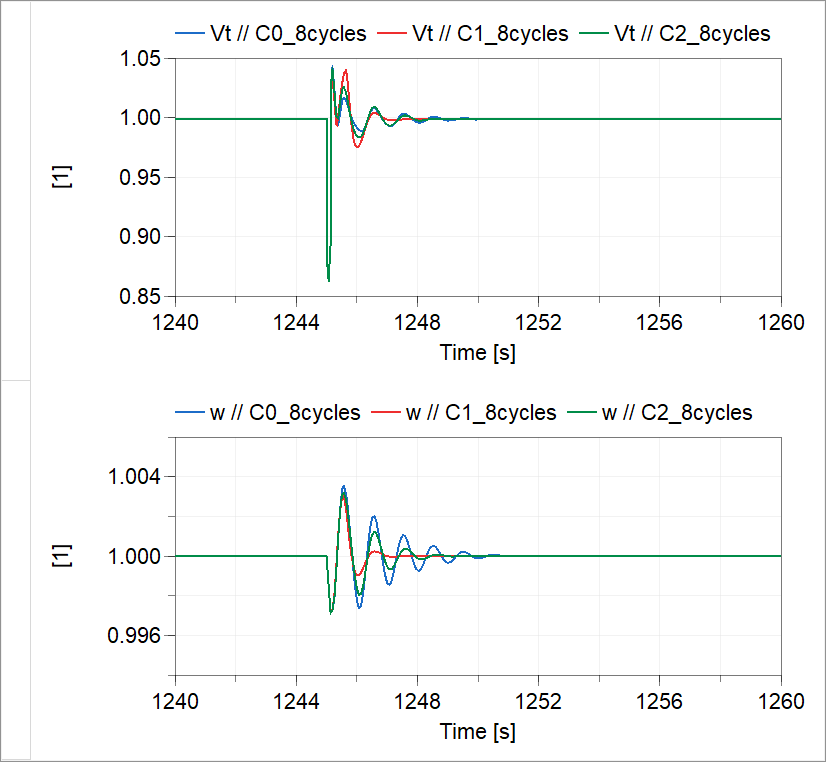

and
and  sec.
sec.  sec.
sec. , resulting in parameters and sec.
, resulting in parameters and sec. Controller verification simulation examples.
This package is configured to simulate the response to an 8-cycle load disturbance and to compare the default PSS control design with the two redesigned controllers presented in [2].
and sec. sec., resulting in parameters and sec.
To compare the different control designs the following function is provided: C012_simulate_plot_compare
Executing this function results in a plot of the terminal voltage and speed similar to that in Fig. 10 of [2], with the main difference being that the random load has been removed to speed up the simulations. Note that the all three cases above are simulated, so if a change is made in one of them, it should be also applied to the others so that running the function gives a plot for useful comparisons.
| Name | Description |
|---|---|
| Simulates and plots the response of three models with different control designs. | |
| C0_8cycles | Default controller with kw=9.5 and tw=1.41. |
| C1_8cycles | Re-designed controller 1 with k2=22.4455 and tw=0.5217. |
| C2_8cycles | Re-designed controller 2 with kw=12.6924 and tw=0.5602. |
 Example1.Analysis.RedesignedControllerVerification.C012_simulate_plot_compare
Example1.Analysis.RedesignedControllerVerification.C012_simulate_plot_compareSimulates and plots the response of three models with different control designs.
Usage
.png)
Sample Output
Executing the function will produce the following plot.

Extends from Modelica.Icons.Function (Icon for functions).
| Name | Description |
|---|---|
| modelname1 | Model name - default controller |
| modelname2 | Model name - controller re-design 1 |
| modelname3 | Model name - controller re-design 2 |
 Example1.Analysis.RedesignedControllerVerification.C0_8cycles
Example1.Analysis.RedesignedControllerVerification.C0_8cyclesDefault controller with kw=9.5 and tw=1.41.
Extends from Modelica.Icons.Example (Icon for runnable examples).
| Name | Description |
|---|---|
| Vt | |
| Q | |
| P | |
| w | |
| delta | |
| AVRin | |
| AVRout |
Example1.Analysis.RedesignedControllerVerification.C1_8cyclesRe-designed controller 1 with k2=22.4455 and tw=0.5217.
Extends from Modelica.Icons.Example (Icon for runnable examples).
| Name | Description |
|---|---|
| Vt | |
| Q | |
| P | |
| w | |
| delta | |
| AVRin | |
| AVRout |
Example1.Analysis.RedesignedControllerVerification.C2_8cyclesRe-designed controller 2 with kw=12.6924 and tw=0.5602.
Extends from Modelica.Icons.Example (Icon for runnable examples).
| Name | Description |
|---|---|
| Vt | |
| Q | |
| P | |
| w | |
| delta | |
| AVRin | |
| AVRout |